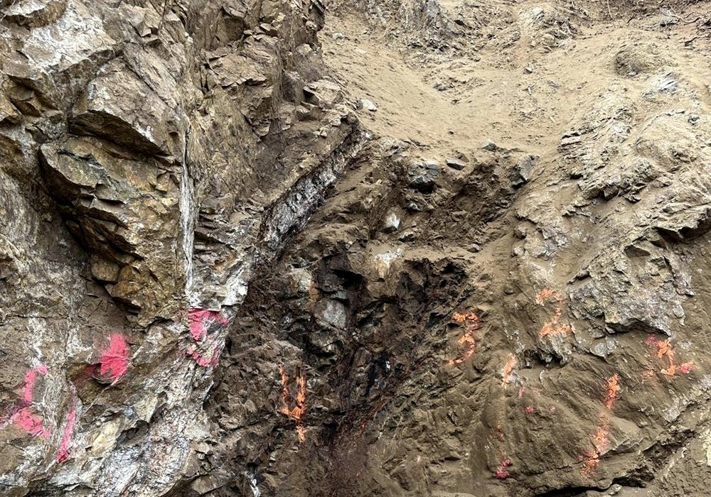

Humboldt Mining's current work program is focused on selective exposure, sampling, and controlled extraction of mineralized vein material while minimizing dilution.
Portal opening and rehabilitation of historic adits.
Surface vein exposure along strike.
Selective excavation in narrow-vein workings.
Channel sampling vein and wall rock separately.
Ore / waste separation at the face.
Crushing and bagging in tracked lots.
Contractor coordination for sustained production rounds.
Road and access work for safe loaded-truck egress.
Ongoing mine rehabilitation and ground support.

Surface and rehabilitation work is performed by qualified contractors holding MSHA Part 48 training. Humboldt Mining Company retains overall project authority, provides permitting and mine ID, and conducts site-specific orientation for all personnel.
Initial weeks focus on portal opening and baseline sampling. Subsequent rounds emphasize controlled vein exposure, with refined estimates of vein width and production rate emerging as work proceeds. Sustained round-by-round production is contingent on ground conditions and ongoing assay confirmation.
Humboldt Mining has reviewed ore-marketing pathways for both dump ore and newly mined material. Buyer specifications, lot control, sampling, packaging, moisture, deleterious elements, and assay-settlement terms are key parts of the sales process. Discussions with qualified counterparties are ongoing.
Selective screening and grab sampling of historic dump material. Composite assay verification prior to lot designation. Sorting into grade tiers; off-spec material returned to dump or retained for further work. Bagged lot control with sample retention.
Controlled blasting and mucking with vein and wall rock kept separate. Bag-level and lot-level records. Paired assay splits retained for buyer cross-check. Lot release on assay agreement; transport scheduling on confirmed buyer purchase order.
Material is crushed and bagged for transport in tracked lots. Bag tags include lot number, sample ID, gross/net weight, moisture estimate, and date. Chain-of-custody documentation is managed at site.
Confirmed lot by lot, the following elements are reviewed for each shipment:
| Specification | Notes |
|---|---|
| Minimum payable gold grade | Buyer-defined cutoff per agreement |
| Maximum moisture content | Measured per shipment |
| Deleterious element thresholds | As, Sb, Hg, Cu, Pb monitored |
| Particle size and packaging format | Bag / tote / bulk as agreed |
| Sampling and assay protocol | Umpire splits retained |
| Settlement basis | Payable percentages, TC / RC structure |